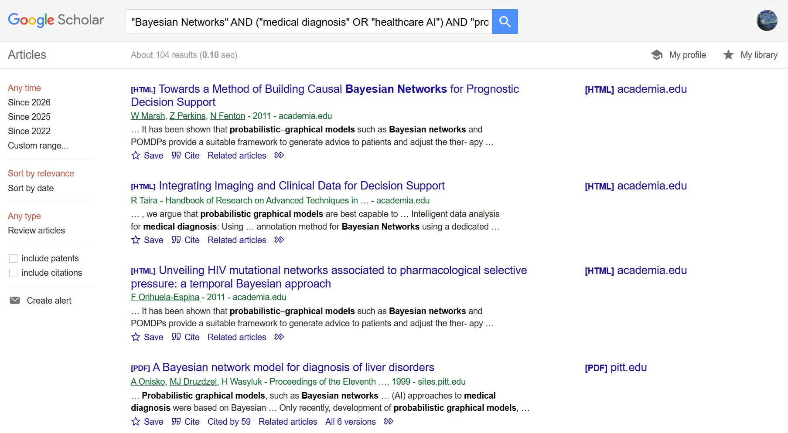

Chủ đề nghiên cứu: Ứng dụng của Suy luận Bayes (Bayesian Inference) trong các mô hình Trí tuệ Nhân tạo chẩn đoán y khoa[cite: 2].
Trí tuệ nhân tạo (AI) trong y tế đòi hỏi độ chính xác cao và khả năng giải thích được (explainability)[cite: 4]. Việc ứng dụng xác suất thống kê, cụ thể là mạng Bayes, giúp mô hình AI xử lý các dữ liệu y khoa không chắc chắn và đưa ra dự đoán có cơ sở toán học rõ ràng[cite: 5]. Đây là một chủ đề hẹp, có tính thách thức cao, kết hợp giữa nền tảng Toán học và khoa học Máy tính[cite: 6].

| STT | Tên tài liệu & Loại nguồn | Tác giả & Cơ quan Xuất bản | Ưu điểm & Nhược điểm | Xếp hạng độ tin cậy |
|---|---|---|---|---|
| 1 | Artificial Intelligence: A Modern Approach (Sách chuyên khảo) [cite: 18] | Russell, S. & Norvig, P. (Pearson) [cite: 18] |
Ưu: Nền tảng lý thuyết AI chuẩn mực nhất, giải thích xác suất Bayes rất kỹ[cite: 18]. Nhược: Thiếu các case-study y khoa lâm sàng thực tế của những năm gần đây[cite: 18]. |
Rất cao [cite: 18] |
| 2 | The Book of Why: The New Science of Cause and Effect (Sách chuyên khảo) [cite: 19] | Pearl, J. (Basic Books) [cite: 19] |
Ưu: Tác giả là "cha đẻ" của mạng Bayes, cung cấp góc nhìn sâu sắc về suy luận nhân quả[cite: 19]. Nhược: Nặng về triết học và toán học, khó áp dụng ngay vào lập trình thực tế[cite: 19]. |
Rất cao [cite: 19] |
| 3 | Probabilistic machine learning and artificial intelligence (Bài báo khoa học) [cite: 19] | Ghahramani, Z. (Nature) [cite: 19] |
Ưu: Đăng trên tạp chí top đầu thế giới, cung cấp cái nhìn toàn cảnh xuất sắc[cite: 19]. Nhược: Thời gian xuất bản khá lâu, chưa bao gồm các đột phá Học sâu mới nhất[cite: 19]. |
Rất cao [cite: 19] |
| 4 | The role of artificial intelligence and Bayesian networks in medical diagnosis (Bài báo khoa học) [cite: 19] | Kyzas, P. A. et al. (AI in Medicine) [cite: 19] |
Ưu: Đúng trọng tâm chuyên ngành y khoa, dữ liệu phong phú, qua bình duyệt khắt khe[cite: 19]. Nhược: Giới hạn phân tích ở một số nhóm bệnh lý cụ thể (như ung thư học)[cite: 19]. |
Cao [cite: 19] |
| 5 | CareMap: A Framework for Inferring Expected Clinical Care Pathways (Bài báo khoa học) [cite: 19] | McLachlan, S. et al. (IEEE Access) [cite: 19] |
Ưu: Đề xuất một framework rõ ràng cho đường hướng chăm sóc lâm sàng dựa trên Bayes[cite: 19]. Nhược: Phức tạp trong việc tích hợp với hệ thống y tế điện tử (EHR) cũ tại các bệnh viện[cite: 19]. |
Cao [cite: 19] |
| 6 | Leveraging uncertainty information from deep neural networks for disease detection (Bài báo khoa học) [cite: 19] | Leibig, C. et al. (Scientific Reports) [cite: 19] |
Ưu: Đột phá trong việc dùng mạng nơ-ron Bayes để đánh giá "độ không chắc chắn" trong chẩn đoán y khoa[cite: 19]. Nhược: Chỉ tập trung vào dữ liệu chẩn đoán hình ảnh (ảnh võng mạc)[cite: 19]. |
Rất cao [cite: 19] |
| 7 | A comprehensive survey on Bayesian inference in modern healthcare AI (Bài báo khoa học) [cite: 20] | Wang, J. et al. (Journal of Biomedical Informatics) [cite: 20] |
Ưu: Tính cập nhật rất cao, tổng hợp được nhiều xu hướng sau đại dịch Covid-19[cite: 20]. Nhược: Số lượng trích dẫn còn thấp do thời gian xuất bản chưa lâu[cite: 20]. |
Cao [cite: 20] |
| 8 | Ethics and governance of artificial intelligence for health (Báo cáo / Nguồn mở rộng) [cite: 20] | World Health Organization (WHO) [cite: 20] |
Ưu: Đảm bảo góc nhìn đạo đức và quy chuẩn quốc tế khi ứng dụng AI xác suất vào sức khỏe con người[cite: 20]. Nhược: Khung chính sách vĩ mô, không đi sâu vào kỹ thuật thiết kế mô hình[cite: 20]. |
Cao [cite: 20] |
| 9 | Transforming healthcare with AI (Báo cáo ngành / Mở rộng) [cite: 20] | McKinsey & Company [cite: 20] |
Ưu: Phản ánh đúng xu hướng đầu tư thực tế của các tập đoàn y tế vào AI[cite: 20]. Nhược: Mang tính chất thương mại và chiến lược nhiều hơn là học thuật hàn lâm[cite: 20]. |
Khá [cite: 20] |
| 10 | How AI is revolutionizing medical diagnostics (Internet / Báo điện tử) [cite: 20] | MIT Technology Review [cite: 20] |
Ưu: Ngôn ngữ dễ hiểu, cập nhật nhanh các dự án AI y tế mới nhất của giới hàn lâm[cite: 20]. Nhược: Tính học thuật không cao, mang tính chất tin tức, không qua bình duyệt[cite: 20]. |
Trung bình [cite: 20] |
Qua quá trình tìm kiếm, có thể thấy mạng Bayes và xác suất thống kê là xương sống của các mô hình AI trong y tế hiện đại, giúp giải quyết bài toán "hộp đen" (black-box) của Deep Learning[cite: 22]. Việc đánh giá nguồn thông tin cho thấy: các bài báo khoa học cung cấp nền tảng toán học chặt chẽ nhưng thường hẹp về phạm vi, trong khi sách chuyên khảo cung cấp kiến thức nền vững chắc[cite: 23]. Để nghiên cứu hiệu quả, cần kết hợp đối chiếu dữ liệu từ CSDL học thuật chuyên ngành và các báo cáo thực tiễn từ ngành công nghiệp[cite: 24].